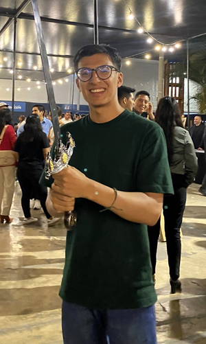

About
Hello!

I am Paolo Maldonado, an enthusiastic programmer and math geek with a fervent passion for computer graphics, rendering, and video games. I’m a self-taught person who likes to delve into the nitty-gritty of the things I study. “Why is this actually doing on a deeper level?” “Why does this other thing work like that?” are phrases I usually say out loud in my day-to-day (actually, I say them aloud in my head). I graduated from Systems Engineering, but my interests extend to anything related to low-level code and game engines. That’s why I love C++!
Video games represent a huge part of why I love graphics programming. Basically, my journey starts thanks to the graphics of a video game. I’ve been programming in C++ for about 3 years and have done some projects that make me proud; these are all related to graphics. I’ve learned a lot about 3D math, rendering algorithms, the physics of light, and how all of these things are represented visually in current games. Even 2D games have some crazy stuff if you go deeper into the details! I even went further with this and made rendering the research topic for my undergraduate thesis.
Currently, I’m working on polishing my C++ skills by learning SFML (I want to make a complete mini-game this time) and Unreal Engine on the side. Right now, I’m looking to develop my career in the games industry because it’s the perfect place where I can apply all of my knowledge and my passions. And last but not least, I’m a gamer; no more explanation is required.
I created this blog primarily to showcase my personal projects as a portfolio and also to write about the projects I will be working on and some experiences too. Sounds interesting? Feel free to reach me through my GitHub or LinkedIn profile.